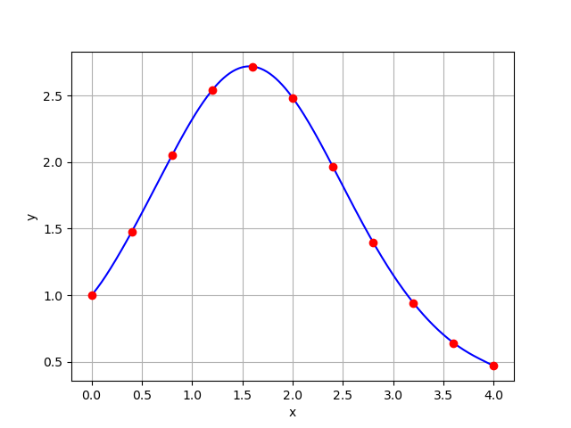

Additional Examples 3.2
1 Let \(P_5(x)\) be the degree 5 polynomial that interpolates \(f(x) = 2^x\) at the six nodes \( 0, 0.2, 0.4, 0.6, 0.8, 1.0 \) on the interval \( [0,1]\).
Find the best possible upper bounds for the interpolation error \( |2^x - P_5(x)| \) at \( x=0.5\) and \(x=0.9\).
The polynomial interpolation error theorem yields
\begin{eqnarray*}
|f(x)-P_5(x)| &=& \frac{|(x-0)(x-0.2)(x-0.4)(x-0.6)(x-0.8)(x-1)|}{6!} |f^{(6)}(c)|
\end{eqnarray*}
where \(f^{(6)}(x) = 2^x(\ln 2)^6.\) Since \(0 \lt c \lt 1, |f^{(6)}|\lt 2^1(\ln 2)^6.\)
For \(x=0.5\):
\[ |f(0.5)-P_5(0.5)| \le \frac{(0.5)^2(0.3)^2(0.1)^2}{6!}2(\ln 2)^6 \approx 6.932\times 10^{-8}. \]
For \(x=0.9\):
\[ |f(0.9)-P_5(0.9)| \le \frac{(0.9)(0.7)(0.5)(0.3)(0.1)^2}{6!}2(\ln 2)^6 \approx 2.911\times 10^{-7}. \]
2 Use the newtdd.m and nest.m codes to plot the interpolating polynomial of \(f(x)=e^{\sin x}\) at the interpolation points \( x_i = 0.4i, i=0,\ldots, 10\) in the interval \([0,4]\). Find the (empirical) maximum interpolation error on the interval.
The code
f=@(x) exp(sin(x));
t0=(0:10)*0.4;t0=t0';
y0=f(t0);
c=newtdd(t0,y0,11);
t=0:.01:4;
y=nest(10,c,t,t0);
plot(t,y,t0,y0,'o','LineWidth',2,'MarkerSize',10);
set(gca,'FontSize',20);grid
max(abs(y-f(t)))
outputs the maximum interpolation error \(0.0069\) and the plot below.
